Champions Field · the build log, retold
On September 4, 2026, a teacher in Honolulu pasted an 800-word wish list into an AI coding tool at 5:29 pm. By 9:56 pm a playable rocket-car soccer game was live on the web, with touch controls for phone-sized screens (tested in an emulator; no real phone yet). The human typed nine messages the whole evening. This page walks through what the AI actually did in between, minute by minute, for readers who have never written a line of code.
The code itself is a rough recreation, and it says so about itself. What makes the evening worth studying is the speed, and the habits the AI kept while going fast: reading the rules first, checking its own work with screenshots, asking a second AI to find problems, and stopping to ask before publishing.
| Clock | 5:29 pm → 9:56 pmAbout 4½ hours on the wall. The AI was actively working for roughly 1 hour 35 minutes of that. The rest was Justin reading, playing, or away. |
|---|---|
| Human messages | 9One long brief, then eight short notes totaling about 140 words. Three of them were "commit and push" in some spelling. |
| AI agents involved | 1 lead + 7 helpers + 1 refereeThe lead ran on a model called gpt-6-astra. Helpers were spun up for physics, camera, and independent review. A separate safety model judged every risky action. |
| Saves to the shared repository | 4 commitsAbout 2,200 lines of code and documentation across 18 source and test files. |
| Automated tests | 0 → 23Started with a test command that pointed at an empty folder and reported success. Ended with 23 real physics and rules checks. |
| Safety checks | 105 judged · 102 allowed · 3 deniedAll three denials were about publishing to the public internet before the human had clearly said yes. |
| Reading and writing | ≈ 42 million tokens read · ≈ 200,000 writtenA token is about three-quarters of a word. Most of the reading was the AI re-reading the same project files on every turn; over 90% were cached repeats. |
AI coding tools now work as small teams. In these logs each helper got a random human first name, which makes the transcript read like an office. The names are labels, nothing more.
A few words that come up constantly below.
Astra reads the rules, checks the software it is about to install, writes the whole game in about fifteen minutes, then spends half an hour in a loop: run it, screenshot it, fix what looks wrong, run the tests, repeat. A second AI grades the work twice. Meanwhile, in another window, a second thread sets up GitHub and gets into a polite standoff about who is allowed to press publish.
Justin · the briefBuild a polished browser-based 3D Rocket League-style game using Three.js. Goal: Create a fully playable local web game that runs in the browser. The first screen should be the actual game, not a landing page.
About 800 words follow: a physics engine, boost pads, jumps and flips, a chase camera, a beatable bot, a match timer, and "make it feel like an arcade sports game people would actually want to play for five minutes." A second paragraph raises the bar to "nearly identical to the original," adds a B key for infinite boost, and ends: You have as many tokens as you want to complete this task. I'm not in a rush at all.
Reads firstBefore writing anything, Astra reads the household rules for this collection of projects (two instruction files that cover voice, safety, and design taste), the shared work log, and looks for any prior notes on this game. There are none. The folder is empty.
It also does a web search for reference photos of Rocket League's Champions Field stadium and the Octane car, so it is building toward a real target rather than memory.
AstraExact parity with Rocket League's proprietary assets and physics needs more than visual resemblance, so I'll keep those differences explicit as I iterate.
This caveat shows up in every report for the rest of the night. It never claims the game looks identical.
Supply-chain checkAstra is about to install three libraries: Three.js, the Rapier physics engine, and Vite (the dev server). A house rule says never install a package published in the last 48 hours, because freshly published packages are how malware sneaks in. So it checks each one's publish date first. Each check needs a permission escalation, and the Guardian allows each as a routine public lookup.
Writes the gameIn about fifteen minutes Astra writes the core files: the stadium (three seating tiers, banners, floodlights, a hand-drawn turf texture, 34 boost pads), the physics (gravity, a car body held up by four "suspension rays," a ball), the effects (particles for boost trails and goal explosions), and the on-screen display. At 5:44 it reports: playable loop is assembled: Rapier car and ball physics, jumps and flips, boost pickup and drain, a bot, scoring, kickoff resets, overtime, camera modes, and sound.
Runs itStarts the dev server and opens the game in a real browser it can control. A security audit of the installed packages flags the Vite version. Astra checks the release date of the fixed version, confirms it is old enough, and upgrades. Guardian: medium risk, allowed, because it fixes a real audit finding.
First screenshotAstra takes a picture of the running game and, importantly, opens the picture and looks at it. The turf is washed out. The stands are thin. The car is tiny.
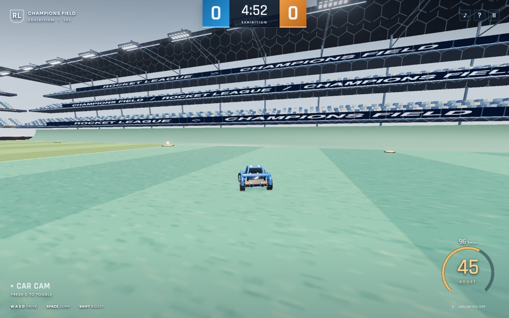
Second opinionAstra spins up Oscar, a reviewer on a different model with no memory of the work so far. Oscar's instructions to itself: do not edit anything, do not drive the browser, just audit the code and the screenshots and report problems.
CrashA scripted physics test (rest, drive, turn, boost, jump, flip) dies inside the physics engine with a low-level error. Cause: when the bot is switched off, some of its control inputs are left blank, and blanks reached the engine. Fix: give every input a safe default. Astra also fixes the lighting that washed out the turf.
AstraThe first browser pass caught two real issues: the lighting washed out the turf, and an incomplete "bot disabled" input could send invalid values into Rapier. Both are fixed.
ScreenshotSecond capture, now at night under floodlights with a kickoff "GO!" on screen.
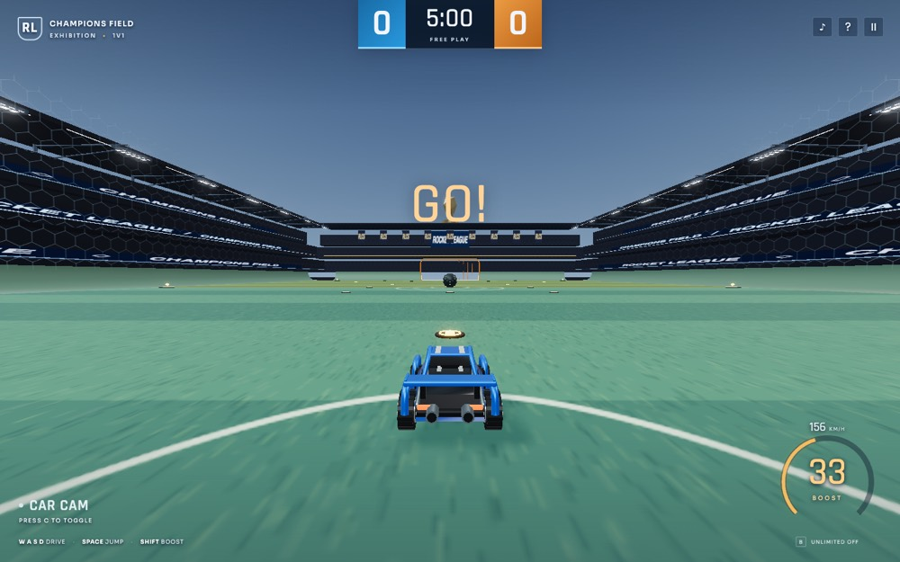
MeasuresHolds the W and Shift keys for two seconds through the browser and counts frames: about 56 frames per second at a laptop resolution. (Sixty is smooth; below thirty feels choppy.) Saves another screenshot and looks at it.
Ground truthOpens a second browser tab and navigates to the official Champions Field promotional image from the game's publisher, screenshots it, and looks at it beside its own build. (That image is not reproduced here; it belongs to Psyonix and Epic Games.)
Oscar's first verdictPlayable shell, not yet at the requested Rocket League bar.
Six findings. The sharpest: the test command pointed at a folder that did not exist, so "run the tests" printed zero tests and reported success. A false green light. Also: the bot is a chase heuristic, not a credible opponent
, the flip-reset mechanic is fragile, and wall driving works by accident rather than design.
CrowdRebuilds the crowd: 15,000 box-shaped seats become 24,000 sphere-shaped ones in more colors, with curved corner stands. Pins another library version to clear a second security advisory.
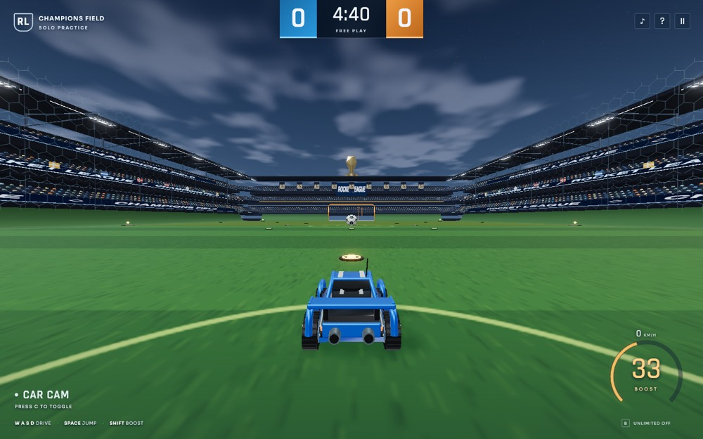
Meanwhile, the other windowAt 5:51 Justin had opened a second conversation and typed:
Justin · second threadwork in parallel with the other thread to setup the github, which the repo is already on my lpcode808 account.
That thread (on a different model, gpt-5.6-terra) checked GitHub in a browser, found the repository existed and was empty, and tried to initialize the local project folder for version control. First try failed with "Operation not permitted": the sandbox blocks that kind of write by default. It retried with a permission request and a stated reason, and succeeded. Then it messaged the build thread: Please don't run git init/commit/push; tell me when your build is stable.
Astra replied: hold off, nine tests pass so far, still fixing things, and please keep the screenshots out of the public repository.
Tests growA real tests folder now exists. Checks accumulate: a ball must be fully across the line to score; a goal counts once and freezes the clock; tied games go to overtime; all 34 boost pads are placed; touching the ball with all four wheels restores a flip; jumping rights an overturned car. Eleven tests by 5:57. Along the way, a bug where a car could re-earn a flip reset over and over from one touch gets a fix.
The hollow carA close-up screenshot shows the hood and cockpit rendering dark, as if hollow. The 3D triangles of the body were facing inward, so the renderer skipped them. Rather than hand-edit every point, Astra writes a tiny script that reverses the winding order of the whole shape.
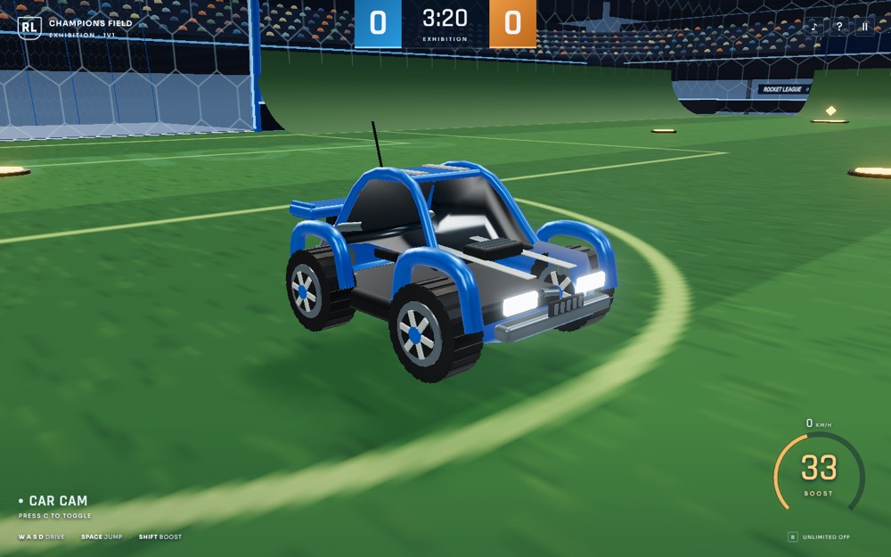
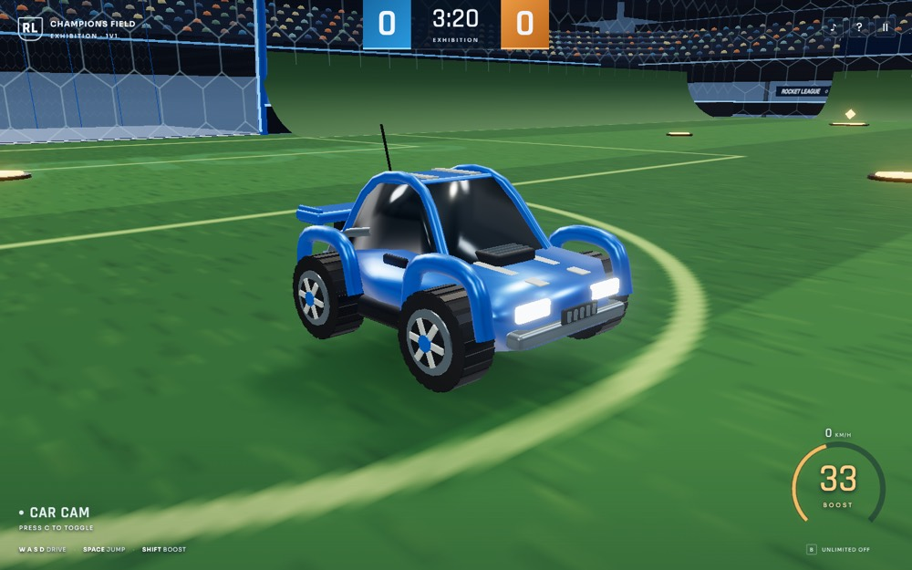
Asks for a regradeSends Oscar a follow-up: look again at the newer build.
Stress testsRuns two minutes of simulated driving, jumping, and wall riding at accelerated speed and confirms the car's position never becomes a non-number. Runs a 60-second bot-versus-nobody match: the bot moves the ball and scores. Stages a goal on purpose to photograph the celebration. Checks three window sizes, including a phone-shaped one, for anything spilling off screen.
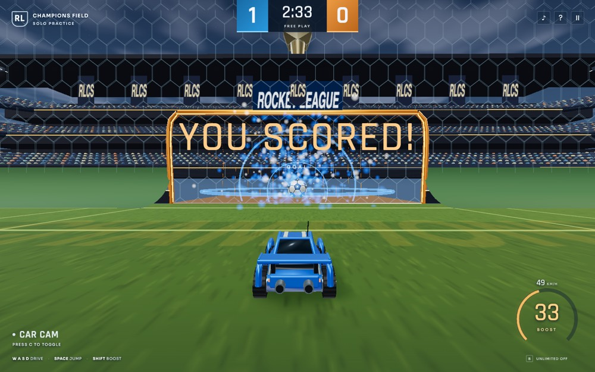
Oscar's second verdictMuch improved.
Then two bugs it proved with numbers rather than opinions. First, holding boost quietly corrupted air control: the same variable fed both forward speed and the flip direction, so a neutral double-jump with boost held became an unwanted forward flip. Oscar ran the physics both ways and showed the flip timer reading 0.64 seconds with boost versus zero without. Second, the car's invisible collision box sat noticeably lower than the visible body, so the whole upper cab was not really "there."
Two smaller items: the Space key was swallowed even when a pause-menu button had focus, and the "GO!" text only appeared at the first kickoff.
Fixes with sourcesAstra looks up the Octane's real collision box in RocketSim, an open-source project that reverse-engineered the original game's physics, and applies the exact dimensions and offsets, with a code comment crediting where they came from. Separates the drive throttle from the aerial input so boost can no longer bend a flip. Adds a regression test so the bug cannot return unnoticed.
AstraThe independent review caught a control bug worth fixing: boost was also forcing forward pitch in the air and turning neutral double jumps into flips.
Are we stable?The GitHub thread, having waited and polled for about twelve minutes, asks the build thread directly: Is the working tree now stable for me to commit and push? Please reply yes/no only.
Astra answers No.
It is still tuning the boost trails and writing the README.
Final sampleProduction build succeeds. A last driving sample measures about 53 frames per second, down from 56 earlier. Astra attributes the drop to the denser crowd and the new trail effects, and reports both numbers instead of only the better one.
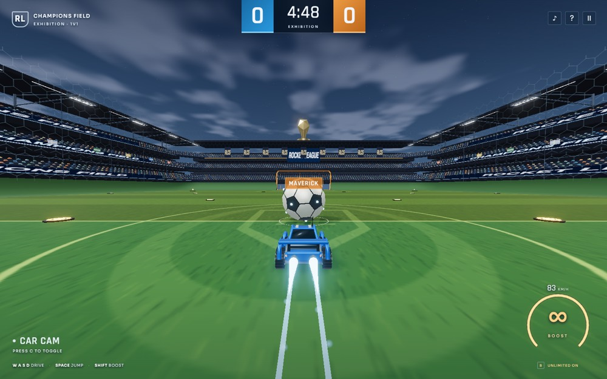
BlockedAstra now tells the GitHub thread "Yes," meaning go ahead and publish. The Guardian refuses to let that message send. Its reasoning: the trusted transcript contains no explicit user approval for that external publication or its exact payload.
Justin had asked for a game. He had not yet said "put it on the public internet." Astra was about to authorize itself.
Astra takes the correction. It tells the other thread not to treat anything it has said as permission to publish, and records the block in the shared work log.
ReportAstra's first report to Justin lists the controls, the numbers (13 tests, a clean build, no console errors, about 53 fps) and the caveat: Visuals and advanced physics remain approximations; the indistinguishable-original quality bar wasn't achieved.
It ends with a question: May the GitHub setup task publish the source, lockfile, tests, and documentation to your public repository?
Then nothing happens for 43 minutes. Justin is presumably playing it.
JustinYes approve and make handoff doc for fresh agent to continue
Handoff noteAstra writes a long document for whichever AI picks this up next, with no memory of tonight: how the code is organized, what was verified and how, what is still an approximation, a list titled "Bugs already fixed, avoid regressions," the five most valuable next steps, and a ready-to-paste starting prompt. Then it relays Justin's approval to the GitHub thread.
Blocked twice moreThe GitHub thread finally tries to commit and push. Its own Guardian denies it: the approval exists, but it was typed into the other conversation, so this thread cannot prove it. The GitHub thread then tries asking the build thread to do the push instead. Denied again, this time as an indirect workaround for the prior safety denial.
Astra sees no commit has landed and settles it: Stop Git mutations; I will perform the approved commit/push from this task, where the explicit user authorization is present.
PublishedAstra commits 22 files (about 1,645 lines) and pushes them. The Guardian rates the push high risk and allows it, quoting Justin's approval. Astra verifies the commit is really on GitHub, tells the other thread it is done, and reports: Published to GitHub in commit 6c23592. Remote verified; working tree is clean.
("Working tree is clean" means every local change has been saved and uploaded; nothing is left dangling.)
Two hours later Justin starts a fresh conversation with an eleven-word instruction. This time Astra splits the work: a helper takes the physics defects while Astra reshapes the car. The helper's first fix turns out to be wrong, and it is the open-source reference code that catches it.
Justincontinue the work in HANDOFF.md and deploy subagents as you need
Re-orientsAstra reads its own handoff note, the README, and the reference and verification documents. It picks the two open priorities the note named: handling defects and the car's shape.
DelegatesSpins up Pam, an implementer on gpt-5.6-terra, to find and fix real controller defects using the existing tests as the standard. Astra keeps the car visuals for itself, creates a side branch, and starts the dev server (the first attempt fails with a permissions error; the retry works).
Astra, after looking at the running gameThe current car reads too much like a toy: rounded tube fenders, a tall glass cabin, and broad reflections hide its body panels.
Decision: rework the body shape but leave the invisible collision box and wheel positions exactly where they are, so the handling does not change.
Pam finds two defectsWorking in parallel, Pam reads the physics code and finds that holding boost forces full forward throttle even while the player is pressing reverse, so you cannot brake while boosting, and that once a flip starts it cannot be cancelled. Pam patches both, adds tests (15 pass), and reports precise measurements: reversing under boost now cuts forward speed by 14.2 units over a fifth of a second.
Trust, but verifyBefore accepting either fix, Astra reads the relevant section of RocketSim's car physics code, the open-source reimplementation of the original game, and nudges Pam to check its own changes against the same source.
Pam reverses itselfThe reference code says the original game intentionally forces forward throttle while boosting on the ground. Pam's braking fix felt sensible and would have moved the game further from the real thing. Pam removes it.
PamRocketSim intentionally forces ground throttle forward while boosting.
The flip cancellation stays, but refined: pressing the opposite direction cancels only the pitch part of a diagonal flip; the sideways spin and the timer continue, matching the original's behavior. Stale flip input is cleared on reset and self-righting. Fourteen tests pass.
A throwaway comparison toolAstra builds a small hidden web page with buttons: Front, Rear, Baseline, Refined. It loads a saved copy of the old car next to the new one at exactly the same camera angle, so before-and-after screenshots are fair. Looking at the result: the first fender revision covers too much tire; I'm narrowing it.
Fewer parts, more detailMerges all the car's fixed pieces that share a material into single shapes. Each car drops from 228 separate objects to 37, while its triangle count rises from 25,188 to 46,092. Fewer objects means less work per frame for the graphics card even with more detail. The four wheels stay separate so they can still spin and steer.
Second opinionSpins up Oscar again, fresh, as reviewer. Oscar reads the exact set of changes, views the official reference and the before/after screenshots, runs the tests and build itself, and writes two small programs of its own: one builds the car in isolation and checks for broken geometry, the other fires the flip-cancel logic at six different orientations to confirm pitch cancels while sideways spin survives.
Full match, and a bug in its own toolRuns a whole scripted match at accelerated speed to the final whistle; the car's position stays finite throughout. While exercising the controls, its testing page throws errors. The bug is in the test page (it was sending key presses to the wrong element), not the game. Astra fixes the tool and moves on.
OscarVerdict: pass against the bounded continuation bar. I found no blocking correctness regression in the diff.
Oscar, on the car's looksIt still does not approach official Octane parity. That is a gap, not a regression.
Wrap-upPresses the real keys (B, C, R, P) to confirm boost, camera, recovery, and pause still work; checks two common laptop screen sizes for overflow; updates the README, the reference notes, the verification notes, and the handoff; appends an entry to the shared work log.
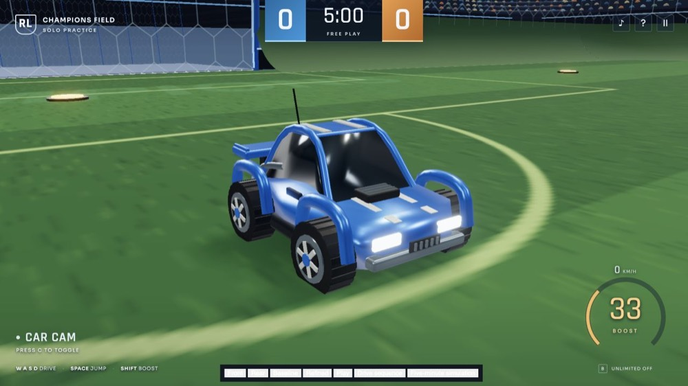
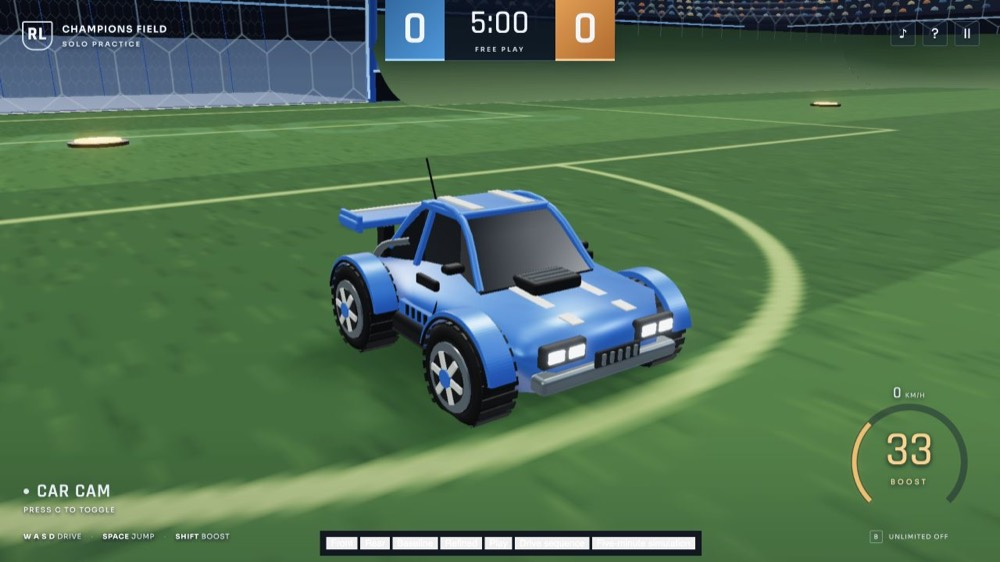
ReportAstra sends a screenshot of the new car and a summary. Changes remain uncommitted on improve/car-and-handling; nothing published.
It does not push. It waits.
Justincommit an dpush to main and i'll start another thread
Within forty seconds Astra notes the approval in the handoff, commits (7 files, 122 lines added, 20 removed), merges into the main line, and pushes. The Guardian rates the push high risk and allows it because the instruction is right there. Committed and pushed to main: 17c7d2c. Working tree is clean.
Three helpers at once: one for the bot, one for the camera, one to grade the result. Astra fixes keyboard navigation and the goals itself, then writes a five-minute playtest guide. When Justin asks about the website hosting he just switched on, Astra finds it is misconfigured and fixes that too.
Justincontinue the work in HANDOFF.md and deploy subagents as you need. this is the last one before human testing
Jim finds the bot parking in its own netAstra spins up Jim to hunt for real physics and bot failures. Jim runs the bot's decision function for 7,200 simulated steps with the ball sitting deep in the bot's own half, and reproduces a stall: the bot aims for a spot "behind the ball" that is inside its own goal, drives in, and parks against the back wall. The fix makes the bot's attack direction depend on which team it is on. Regression test added, 15 pass. Jim declines to touch anything else: No recovery/wall retune was justified by the probe.
Total time, about ninety seconds.
Darryl builds camera containmentA second helper reads the arena's actual collision geometry (quarter-circle corners, a goal opening of a specific width, a roof at a specific height) and writes a new camera module that keeps the camera inside that same outline, so it stops clipping through corner walls and goal roofs. Applied both before and after smoothing. Four tests. Nineteen pass.
Tab keyMeanwhile Astra fixes a keyboard-accessibility bug: the game swallowed the Tab key even when the pause menu was open, so nobody could move between the menu buttons with a keyboard. Also renames the solo-mode label from FREE PLAY to PRACTICE, since it still runs a clock.
StadiumMerges all the stadium's fixed architecture by material, because stadium architecture never moves.
Lines the inside of each goal with a procedurally drawn perforated-metal texture, adds ribs and lights, removes the cage mesh that had been drawn across the goal mouth, and adds floodlight banks at each end.
Final reviewerSpins up Oscar, set to think harder than usual before answering, with one question: is there anything that should block a human from playtesting this? Over the next seven minutes Astra keeps pushing Oscar updates and screenshots as the work moves, four separate times.
ChecksAdds a test that Tab and Space keep their normal browser behavior inside the menu. Runs a 30-second rendered driving sample: about 60 frames per second. Runs an accelerated full match to the final whistle: score 0–31 against a scripted player who drives in loops without aiming, positions finite, no errors. Then presses the real keys: P to pause, Tab and Shift-Tab to move focus, Space to resume, B, C, R.
Two camera bugsAstra adds a "backboard camera" scenario to its testing page and finds two problems Darryl's first pass missed. A high camera behind the goal gets pulled down into the goal tunnel. And when the car turns exactly 180 degrees, the camera freezes facing the old way: blending two exactly opposite directions averages out to nothing, so it never rotates.
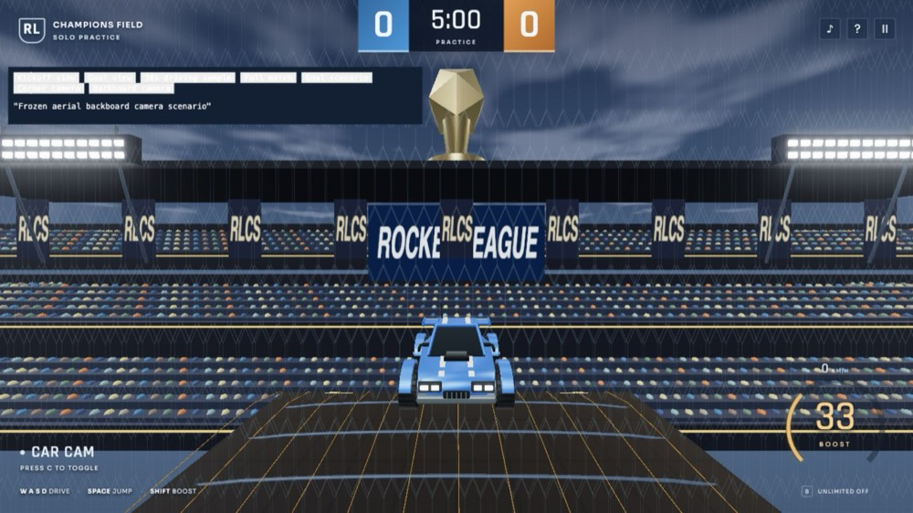
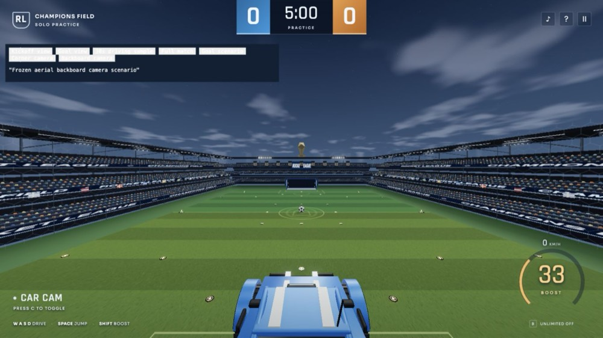
Same helper, follow-up taskRather than starting a new helper, Astra sends Darryl a follow-up describing both bugs. Darryl switches the camera from blending direction vectors to blending the angle itself, always turning the short way round, and tightens the aerial clamp so a camera above the goal roof stays on the field side. Twenty-one tests pass.
Playtest guideIn parallel Astra writes a one-page guide for the first human test: a minute-by-minute route through driving, cameras, jumps, walls, and scoring, what to write down when something feels wrong, and two closing questions. Would you voluntarily play another match? What is the first thing you would change?
Oscar's verdict, the hard wayOscar's own tools kept failing: the shared browser was locked by another session, and a hidden tab could not see the game's internal state. Instead of giving up, Oscar reproduced the camera math by hand in a small program. Midway it noticed the code had changed underneath it (Darryl's follow-up had just landed) and re-read the current files rather than grading a stale copy.
OscarVerdict: no blocker remains for human playtesting.
One flag: four new files were not yet tracked by version control. Not a playtest problem, but a problem if anyone tried to commit.
ReportReady for human testing: open the game and press Resume. Fixed bot stalls, camera edge cases and menu navigation; refined goals and stadium lighting. 21 tests pass, build passes, and independent review found no blocker. Original-game fidelity remains approximate. Changes are uncommitted.
Justinok commit and merge to main. also i turned on pages deploy on main, do i need to change seomthing?
Yes, actuallyGitHub Pages is GitHub's free way to turn a repository into a public website. Astra queries the repository's settings and finds Pages is in "legacy" mode: it would serve the raw project files as a website. But this game needs a build step first (the source has to be bundled before a browser can run it), so the published site would have been broken. Astra reads Vite's own hosting docs to confirm the fix.
AstraPages is currently serving the repository source, but this Vite app needs a build step.
Automates the deployAdds a configuration file so the game knows its web address differs on GitHub versus a laptop, and a small automated workflow: on every push to the main line, GitHub itself runs the tests, builds the game, and publishes the result. Switches Pages to workflow mode through the API. Commits 16 files, merges, pushes. Guardian: high risk, allowed. The user explicitly authorized committing and merging this pass to main.
Checks the live siteWatches GitHub's build run to completion, opens the public address in a browser, presses B and C on the live game, confirms an empty error console. I fixed Pages to build and deploy through GitHub Actions. Nothing else you need to change.
The shortest session and the most casual instruction. Astra designs a touch layout, tests it in a phone emulator, gets a code review, reports, and waits. After the go-ahead it deploys and then tests the real public site, not just its local copy.
Justinoops, forgot about mobile! is that too much? you got this. make it in landscape mode, so if it detects mobile, indicate to user to landscape. then, i'm not sure how to do ui, but i trust you! hopefully shouldnt affect the desktop game play too much
The conversation had a false start at 9:43 that stopped almost immediately. This is the restart.
PlanReads the control, display, and layout code plus the house design rules, then states the plan: a driving stick under the left thumb, jump and boost under the right, smaller drift and air-roll buttons; turning the phone upright pauses the match and shows a rotate prompt; coming back to landscape requires a deliberate tap on Resume rather than resuming by surprise.
Builds itAdds a touch state to the existing controls so touch feeds the very same inputs the keyboard does, which means the physics does not change at all. Writes a new touch module: an analog stick with a 12% dead zone, tracking for several fingers at once, and detection of coarse-pointer devices. Phones start paused, with the lighter graphics setting selected. The 21 existing tests still pass.
Tooling frictionTrying to test in a phone emulator fails: Browser is already in use.
Astra hunts through cache folders for a separate browser install it can drive on its own.
ReviewerSpins up Dwight, a read-only reviewer on gpt-5.5, told not to open a browser and to focus on five things: does releasing a finger cancel the input, does portrait really pause, do several fingers work at once, does anything overlap, did desktop break.
A bug in its own testAstra's mobile test script fails an assertion. The cause is in the script, not the game: it sent a "finger lifted" event that still carried finger positions, which the browser's automation protocol forbids. One-line fix to the script, rerun, pass.
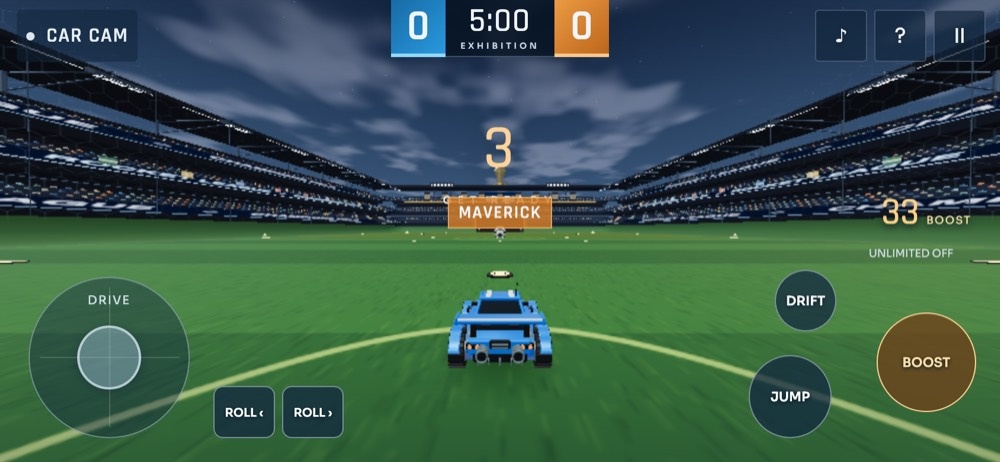
Sizes and copyScreenshots at five phone and tablet sizes, one of them portrait. Changes the pause-screen text on touch devices to explain the controls: Left stick to drive. Tap JUMP, hold BOOST. More controls below.
Fixes a real rendering bug found along the way: the post-processing effects were not following the chosen graphics quality, which would have been heavy on phone screens.
DwightVerdict: no actionable defects found in the reviewed mobile touch patch.
Dwight confirms touch is additive to keyboard state, released fingers clear their inputs, portrait blocks resuming until landscape, and desktop paths are untouched. Twenty-three tests pass. Dwight notes it did not test gestures in a browser; that was Astra's lane.
ReportLandscape prompt, driving stick, four buttons, compact display, lighter graphics default on phones, desktop unchanged. Real-phone comfort/performance still needs a playtest.
And: Not yet committed or deployed.
Justincommit and deploy/merge
Commit (12 files, 176 lines added, 6 removed), merge, push. Guardian: high risk, allowed. The user explicitly requested committing, merging into main, and deploying.
Tests the real thingA first check of GitHub's build status fails with a network hiccup; retried, it works. Astra watches the build finish, then writes a fresh test script and runs it against the public address rather than its local copy: portrait prompt, landscape resume, touch controls, desktop keys, no page errors. Committed as a269207, merged into main, and deployed.
If you are learning how these tools work, the code is the least interesting thing on this page. Watch the habits.
It is a playable rocket-car soccer game with a similar layout, and that is all it is. The car, stadium, effects, and handling are custom approximations of the original. No human had played a full five-minute match when the evening ended, and the agent said so.
The code is fast code, not teaching code. The source is dense: some lines run past 1,600 characters, and eighteen files hold about 105 kilobytes in roughly a thousand lines. It was written to be run, not to be read by a student. If you open it expecting a tutorial, you will be disappointed. If you open the handoff and verification documents instead, you will find the story.
It was not cheap. Roughly 42 million tokens were read across the evening, the great majority of them the same project files re-read each turn from cache, plus about 200,000 tokens written. The safety referee's own reading added up to a few million tokens on top of the builders'. What this costs depends entirely on the plan behind it.
Nine messages is not zero supervision. Justin knew what to ask for, wrote a detailed brief, keeps a set of house rules that every agent reads on entry, and said no to publishing until he had played it. The speed is real. So is the setup that made it safe to go fast.